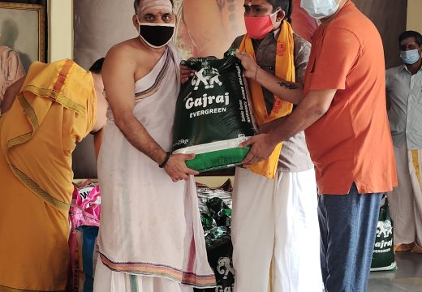

Brahmin Seva Swayampakam (TG Covid Crisis Hindu Responsibility): During the 2020 Covid crisis, Hindu Jana Shakti supported temple priests and the Archakar community by providing food supplies and rations to 1,000 Brahmin families through the Swayampakam initiative.